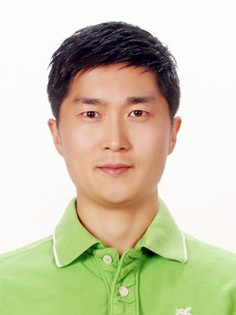

Postdoc at McGill University
|  | Department of Mining and Materials Engineering Engineering McGill University Wong Building Rm#2260 3610 University Street Montreal, QC, H3A 0C5 dong-geun.kim (at) mail.mcgill.ca |
I am a postdoc working on computational thermodynamics. Hello World! I am currently very interested in learning python.
Dong-Geun Kim, Elmira Moosavi-Khoonsari, and In-Ho Jung. 2018. “Thermodynamic Modeling of the K2O-Al2O3 and K2O-MgO-Al2O3 Systems with Emphasis on β- and βʹʹ-Aluminas.” Journal of the European Ceramic Society (accepted).
Bikram Konar, Dong-Geun Kim, and In-Ho Jung. 2018. “Critical Thermodynamic Optimization of the Li2O-Al2O3-SiO2 System and Its Application for the Thermodynamic Analysis of the Glass-Ceramics.” Journal of the European Ceramic Society (minor revision).
Bikram Konar, Dong-Geun Kim, and In-Ho Jung. 2018. “Coupled Experimental Phase Diagram Study and Thermodynamic Optimization of the Li2O–MgO–SiO2 System.” Journal of the American Ceramic Society 101 (4):1711–26. http://dx.doi.org/10.1111/jace.15293.
Dong-Geun Kim, Marie-Aline Van Ende, Pierre Hudon, and In-Ho Jung. 2017. “Coupled Experimental Study and Thermodynamic Optimization of the K2O-SiO2 System.” Journal of Non-Crystalline Solids 471:51–64. http://www.sciencedirect.com/science/article/pii/S0022309317302065.
Dong-Geun Kim, Bikram Konar, and In-Ho Jung. 2017. “Coupled Experimental Study and Thermodynamic Optimization of the K2O-MgO and K2O-MgO-SiO2 Systems.” Metallurgical and Materials Transactions B 48 (5):2788–2803. https://doi.org/10.1007/s11663-017-1038-1.
Bikram Konar, Dong-Geun Kim, and In-Ho Jung. 2017. “Coupled Phase Diagram Experiments and Thermodynamic Optimization of the Binary Li2O-MgO and Li2O-CaO Systems and Ternary Li2O-MgO-CaO System.” Ceramics International 43 (16):13055–62. http://www.sciencedirect.com/science/article/pii/S0272884217313573.
Bikram Konar, Dong-Geun Kim, Marie-Aline Van Ende, and In-Ho Jung. 2017. “Application of Thermodynamic Database to New Mold Flux Design for High-Al Steel Production.” In AISTech2017, the Iron & Steel Technology Conference and Exposition, Nashville, USA.
In-Ho Jung, Marie-Aline Van Ende, Dong-Geun Kim, Bikram Konar, and Sun-Yong Kwon. 2015. “Thermodynamic database for oxy-fluoride mold flux, CaO-MgO-Na2O-K2O-Li2O-Al2O3-SiO2-ZrO2-F.” In Asia Steel International Conference 2015 (Asia Steel 2015), Yokohama, Japan.
Dong-Geun Kim, Corrie van Hoek, Christian Liebske, Sieger van der Laan, Pierre Hudon, and In-Ho Jung. 2012. “Phase Diagram Study of the CaO-CaF2 System.” ISIJ International 52 (11):1945–50. https://doi.org/10.2355/isijinternational.52.1945.
Dong-Geun Kim, Marie-Aline Van Ende, Corrie van Hoek, Christian Liebske, Sieger van der Laan, Pierre Hudon, and In-Ho Jung. 2012. “Coupled phase diagram and thermodynamic modeling of the CaO-CaF2 system.” In The Ninth International Conference on Molten Slags Fluxes and Salts (Molten 12), Beijing, China.
Dong-Geun Kim, Marie-Aline Van Ende, Corrie van Hoek, Christian Liebske, Sieger van der Laan, and In-Ho Jung. 2012. “A Critical Evaluation and Thermodynamic Optimization of the CaO-CaF2 System.” Metallurgical and Materials Transactions B 43 (6):1315–25. https://doi.org/10.1007/s11663-012-9733-4.
In-Ho Jung, Marie-Aline Van Ende, and Dong-Geun Kim. 2011. “Thermodynamic modeling of the F-containing oxide system and applications to refractory corrosion.” In Unified International Technical Conference on Refractories (Unitecr 2011), Kyoto, Japan.